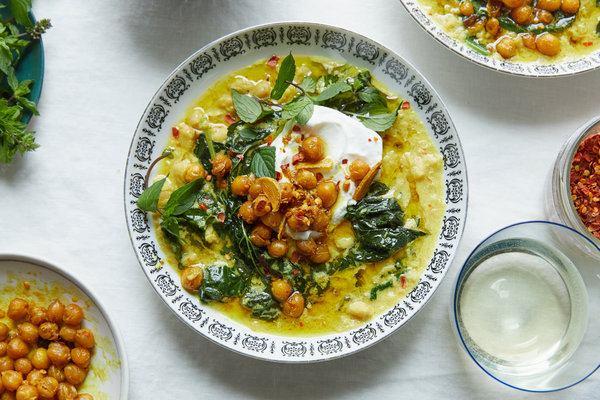

Chickpea Stew

Description
I lifted this recipe from the New York Times, which is
unfortunately behind a paywall. But no need to worry
because I wrote it down for you here! You cannot copywrite
a recipe so come at me, NYT. Anyway, here is how to make
tumeric spiced chickpea stew. It comes together in under
an hour and feeds four people. I like to make it on
Soup Sundays.
Ingredient
- chickpeas, 2 14oz cans
- coconut milk, 14 oz
- broth, 2 cups
- onion, chopped
- carrots, 4 sliced into coins
- ginger, 1 tablespoon minced
- garlic, 3 cloves minced
- tumeric, 1 tablespoon
- cumin, 2 teaspoons
- oil, coconut or olive, 2 tablespoons
- lime
- yogurt and cilantro for topping
Steps
- In a dutch oven over medium heat, heat oil, add onion and carrots
and cook for about 5 minutes or until softened
- Add ginger, garlic, and spices and cook until fragrant
- Add drained chickpeas to dutch oven and cook for 5 minutes
- Pour in coconut milk and broth, bring to a boil, and reduce to a simmer
for 30 minutes.
- Ladle into bowls and top with lime, cilantro, and yogurt